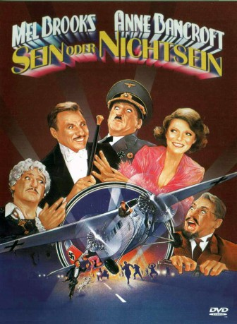

#6089 Sein oder Nichtsein
Alternativ: To Be or Not to Be
Auszeichnungen: für 1 Oscars nominiert
 
 IMDB-Wertung: 6.8 / 10
IMDB-Wertung: 6.8 / 10  Metascore: 0
Metascore: 0 
Mitglieder einer Warschauer Schauspieltruppe werden während der deutschen Besatzung in den Versuch eines polnischen Kollaborateurs verwickelt, die Untergrundbewegung zu verraten, und vereiteln dies durch Einsatz ihrer schauspielerischen Fähigkeiten. Wiederverfilmung des durch Ernst Lubitsch 1942 berühmt gewordenen anti-nazistischen Stoffes, die zwar stellenweise in Klamauk ausartet, insgesamt jedoch dem tragikomischen Stoff gerecht wird.
Jahr: 1983
Dauer: 107 Minuten
FSK: 12
Land: USA Studio: 20th Century Fox Home EntertainmentTonspuren: DD2.0 - ,
Untertitel:
Auflösung: 720p (1280x688) Größe: 4628 MB
Genre: Komödie
Regisseur: Alan Johnson
Drehbuch: Ward Hulselmans
Soundtrack:
Darsteller:
- Estelle Reiner als Gruba
- Jack Riley als Dobish
 George Gaynes als Ravitch
George Gaynes als Ravitch George Wyner als Ratkowski
George Wyner als Ratkowski Christopher Lloyd als Capt. Schultz
Christopher Lloyd als Capt. Schultz José Ferrer als Prof. Siletski
José Ferrer als Prof. Siletski Charles Durning als Col. Erhardt
Charles Durning als Col. Erhardt Tim Matheson als Lt. Andre Sobinski
Tim Matheson als Lt. Andre Sobinski Mel Brooks als Dr. Frederick Bronski
Mel Brooks als Dr. Frederick Bronski Anne Bancroft als Anna Bronski
Anne Bancroft als Anna Bronski Earl Boen als Dr. Boyarski
Earl Boen als Dr. Boyarski John H. Francis als British Intelligence Aide
John H. Francis als British Intelligence Aide- Max Brooks als Rifka's Son
- Wolf Muser als Desk Sergeant
 Henry Brandon als Nazi Officer
Henry Brandon als Nazi Officer- Ron Kuhlman als Polish Flier
 John Otrin als Polish Flier
John Otrin als Polish Flier Paddi Edwards als Pub Waitress
Paddi Edwards als Pub Waitress- Tucker Smith als Klotski's Klown
- Patrice Cole als Theater Patron , uncredited
- Richard Halpern als Theater Patron , uncredited
- Ronny Graham als Sondheim
- Zale Kessler als Bieler
- Lewis J. Stadlen als Lupinsky
- James 'Gypsy' Haake als Sasha
- Scamp als Mutki
- Ivor Barry als General Hobbs
- William Glover als Major Cunningham
- Raymond Skipp als R.A.F. Flight Sergeant
- Marley Sims als Rifka
- Larry Rosenberg als Rifka's Husband
- Henry Kaiser als Gestapo Officer
- Milton James als Gestapo Soldier
- George Caldwell als Gestapo Guard
- Lee E. Stevens als 2nd Nazi Officer
- Frank Lester als Officer in Command Car
- Roy Goldman als Hitler
- Robert Goldberg als Hitler Adjutant
- John McKinney als Elite Guard Officer
- Eda Reiss Merin als Frightened Jewish Woman
- Manny Kleinmuntz als Frightened Jewish Woman's Husband
- Phil Adams als Airport Sentry
 Curt Lowens als Airport Officer
Curt Lowens als Airport Officer- Robin Haynes als Polish Flier
- Blane Savage als Polish Flier
- Joey Sheck als Polish Flier
- Ron Diamond als Pub Bartender
- Gillian Eaton als Pub Barmaid
- Terence Marsh als Startled British Officer
- Winnie McCarthy als Picadilly Usherette
Datei: X:\1983\Sein oder Nichtsein (1983, FSK12, 1280x688).mkv seit 28.04.2017
Festplatte: HD 1980-1986
 Es gibt insgesamt 35 Filme in der Gruppe '1983'
Es gibt insgesamt 35 Filme in der Gruppe '1983'